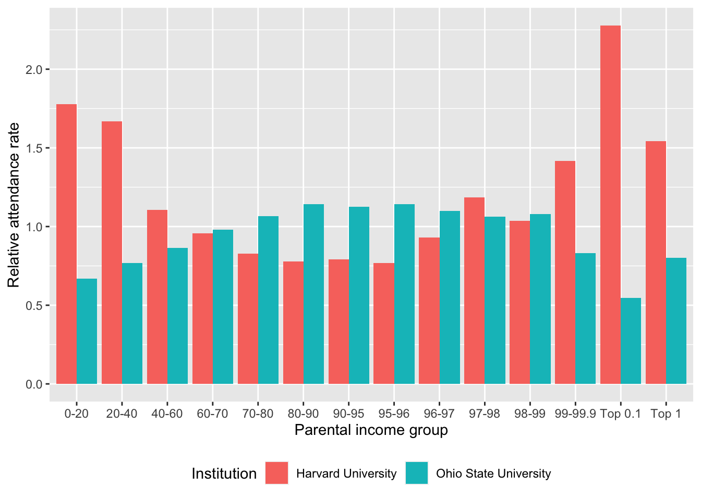

Elite college admissions
EDA
ANOVA
We know that students at elite universities tend to be from high-income families, and that graduates are more likely to end up in high-status or high-income jobs. But very little public data has been available on university admissions practices. This dataset, collected by Opportunity Insights, gives extensive detail on college application and admission rates for 139 colleges and universities across the United States, including data on the incomes of students. How do admissions practices vary by institution, and are wealthy students overrepresented?
Motivation
Education equality is one of the most contested topics in society today. It can be defined and explored in many ways, from accessible education to disabled/low-income/rural students to the cross-generational influence of doctorate degrees and tenure track positions. One aspect of equality is the institutions students attend. Consider the “Ivy Plus” universities, which are all eight Ivy League schools plus MIT, Stanford, Duke, and Chicago. Although less than half of one percent of Americans attend Ivy-Plus colleges, they account for more than 10% of Fortune 500 CEOs, a quarter of U.S. Senators, half of all Rhodes scholars, and three-fourths of Supreme Court justices appointed in the last half-century.
A 2023 study (Chetty et al, 2023) tried to understand how these elite institutions affect educational equality:
Do highly selective private colleges amplify the persistence of privilege across generations by taking students from high-income families and helping them obtain high-status, high-paying leadership positions? Conversely, to what extent could such colleges diversify the socioeconomic backgrounds of society’s leaders by changing their admissions policies?
To answer these questions, they assembled a dataset documenting the admission and attendance rate for 13 different income bins for 139 selective universities around the country. They were able to access and link not only student SAT/ACT scores and high school grades, but also parents’ income through their tax records, students’ post-college graduate school enrollment or employment (including earnings, employers, and occupations), and also for some selected colleges, their internal admission ratings for each student. This dataset covers students in the entering classes of 2010–2015, or roughly 2.4 million domestic students.
They found that children from families in the top 1% (by income) are more than twice as likely to attend an Ivy-Plus college as those from middle-class families with comparable SAT/ACT scores, and two-thirds of this gap can be attributed to higher admission rates with similar scores, with the remaining third due to the differences in rates of application and matriculation (enrollment conditional on admission). This is not a shocking conclusion, but we can further explore elite college admissions by socioeconomic status to understand the differences between elite private colleges and public flagships admission practices, and to reflect on the privilege we have here and to envision what a fairer higher education system could look like.
Data
The data has been aggregated by university and by parental income level, grouped into 13 income brackets. The income brackets are grouped by percentile relative to the US national income distribution, so for instance the 75.0 bin represents parents whose incomes are between the 70th and 80th percentile. The top two bins overlap: the 99.4 bin represents parents between the 99 and 99.9th percentiles, while the 99.5 bin represents parents in the top 1%.
Each row represents students’ admission and matriculation outcomes from one income bracket at a given university. There are 139 colleges covered in this dataset.
The variables include an array of different college-level-income-binned estimates for things including attendance rate (both raw and reweighted by SAT/ACT scores), application rate, and relative attendance rate conditional on application, also with respect to specific test score bands for each college and in/out-of state. Colleges are categorized into six tiers: Ivy Plus, other elite schools (public and private), highly selective public/private, and selective public/private, with selectivity generally in descending order. It also notes whether a college is public and/or flagship, where “flagship” means public flagship universities. Furthermore, they also report the relative application rate for each income bin within specific test bands, which are 50-point bands that had the most attendees in each school tier/category.
Several values are reported in “test-score-reweighted” form. These values control for SAT score: they are calculated separately for each SAT score value, then averaged with weights based on the distribution of SAT scores at the institution.
Note that since private schools typically don’t differentiate between in-state and out-of-state applications, they largely have any estimate related to that as missing.
Additional education data
The College Scorecard dataset contains additional information on universities across the United States. It can be linked to this data by OPEID, a unique 6-digit identifier for each institution. The super_opeid column in this data gives the OPEID for each institution, which can be matched to the OPEID6 column in the College Scorecard data.
Data preview
CollegeAdmissions_Data.csv.gz
To better illustrate the data, this plot shows the relative attendance rate (rel_attend) for two institutions, split by parental income level:
Variable descriptions
The dataset codebook from Opportunity Insights contains the full list of variables. This is an extract of a few useful variables:
| Variable | Description |
|---|---|
| super_opeid | Institution ID. Based on OPEIDs (Office of Postsecondary Education Identifiers), which can be matched to other US government datasets on colleges. All are 6 digits, padded with initial 0s if the number is less than 6 digits. |
| name | Name of college (or college group) |
| par_income_bin (par_income_lab) | Parent household income group (and the label) based on percentile in the income distribution of all households with children born in the same year. |
| rel_apply | Test-score-reweighted relative application rate: the ratio of the number of students who applied to the school from this income bin to the number who would apply if all students with the same test scores applied at the same rate, regardless of parent income |
| attend | Test-score-reweighted absolute attendance rate: the fraction of students attending this institution among all students in the income bin |
| rel_attend | Test-score-reweighted relative attendance rate: the absolute attendance rate divided by the mean attendance rate across all parental income bins for this institution |
| rel_att_cond_app | The ratio of rel_attend to rel_apply |
| rel_apply_sat | Relative application rate for specific test score band based on school tier/category. The test score band is a 50-point band that had the most attendees in this school’s tier (test_band_tier variable). |
| attend_sat (rel_attend_sat) | Absolute (and relative) attendance rate for specific test score band based on school tier/category |
| rel_att_cond_app_sat | Relative attendance rate, conditional on application, for specific test score band based on school tier/category |
| rel_apply_instate (rel_apply_oostate) | Test-score-reweighted relative application rate for in-state (out-of-state) students |
| tier (tier_name) | Category of this institution: Ivy Plus, other elite schools (public and private), highly selective public/private, and selective public/private |
| flagship | Indicator for public flagship universities |
| public | Indicator for public universities |
| test_band_tier | School group for the test-score band statistics |
Questions
- Do some basic EDA focusing on
rel_attendandrel_applyby school tier/types. What does the distribution look like? Which school(s) have the highest top 0.1% and top 1% relative application and attendance rates? Are these results surprising? - The researchers define the middle class students as “individuals with parental income between the 70th and 80th percentile of the national parental income distribution.” Based on this characterization, can you visualize the difference in relative application and attendance rate for both the middle class and the top 1% students, by college tiers?
- Recently, 17 schools (Brown, CalTech, UChicago, Columbia, Cornell, Dartmouth, Duke, Emory, Georgetown, Johns Hopkins, MIT, Notre Dame, Northwestern, UPenn, Rice, Vanderbilt, and Yale) were sued in a class action lawsuit accused of conspiring to limit financial aid for admitted students. Use relative attendance conditional on application as an outcome, do these 17 schools differ than other comparable private colleges, particularly in low-income (bottom 40%) and middle-class (70-80 percentile) brackets? Use your own discretion to find comparable colleges within the dataset and articulate your reasoning.
References
Chetty, Raj, D. Deming, and J. Friedman (2023). “Diversifying Society’s Leaders? The Determinants and Causal Effects of Admission to Highly Selective Private Colleges.” NBER Working Paper 31492. doi:10.3386/w31492
Relevant news stories and court cases: